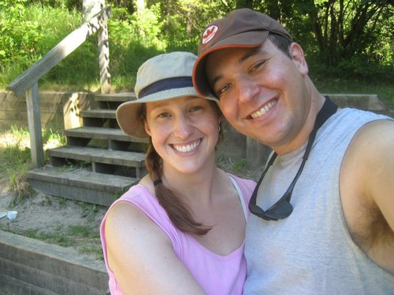
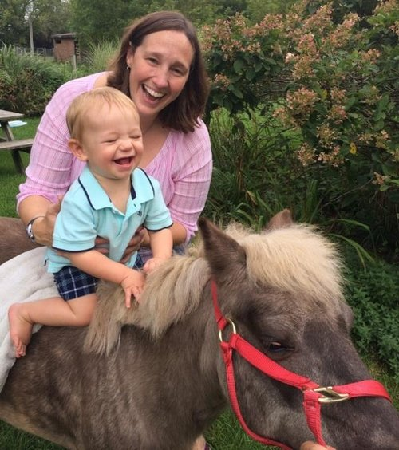

Experienced Prosecutor. Compassionate Leader.

Lark Cowart is a compassionate leader we can trust to adjudicate with ethical clarity and commitment to the values we share as a community. Lark has always prioritized service to her community as an attorney, mentor, coach, teacher and mom. Lark Cowart is an accomplished attorney and an experienced prosecutor… and so much more.


LARK IS...
- Mother of two small children and the wife of a supportive husband.
- Citizen who cares deeply about the direction in which our county, state and country are headed.
- Lawyer, who graduated cum laude with a law degree from Loyola University Chicago, and with a masters degree in dispute resolution from Pepperdine University School of Law, Straus Institute for Dispute Resolution, where she earned Cali Awards in Arbitration Practice and Environmental & Public Policy Mediation
- Public servant of Kane County, as Assistant State's Attorney for the last 14 years where she was twice nominated for Prosecutor of the Year; and as a coach and mentor to local youth.
- Someone who understands the challenges facing working families and the hardships that lead to wrong behavior through her time working multiple jobs to make ends meet.
- Licensed trainer in Restorative Practices, a strategy that seeks to repair relationships that have been damaged by bringing about a sense of remorse, restorative action and forgiveness.
- Swim and kayak coach for Saint Charles Swim Team, USA Canoe/Kayak Junior National Development Team, Lincoln Park Boat Club, Latin School of Chicago Girls Swim Team and Boathouse Supervisor at 1996 Summer Olympics.
- A Renaissance Woman, with interests in many things other than the law, such as music, martial arts, crafting, reenacting, and fire spinning!